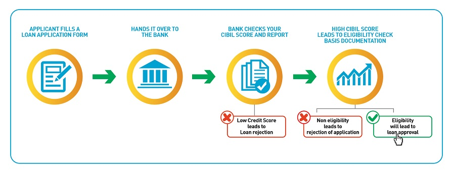

Today, loans play an integral part in our financial and social well-being by helping us manage our finances. They have made our life easier, providing us the financial leverage that extends beyond our earnings. Be it Credit Card, Home Loan, Personal Loan or Auto Loan etc. loans are the credit extended to us by lenders on fulfilling certain key parameters.
Whenever you apply for a loan, banks check your CIBIL Score and Report to evaluate your credit history and credit worthiness. The higher your score the better are the chances of your loan application getting approved.

What is a Personal Loan and what can it be used for?
A Personal Loan is an unsecured loan taken by borrowers to meet their varied financial needs. It is also called an ‘All-purpose loan’ at times as there is no restriction on the end use of the funds.
Borrowers use personal loans for various reasons such as debt consolidation, vacations, refurnishing their homes, buying a new appliance, to fund weddings, pay education or medical expenses etc. Personal loans, when used judiciously can also be beneficial in improving your finances and your credit score.
What role does my CIBIL score play in this process?
Your CIBIL score and report is one of the most important parameters that facilitate your loan approval. Since you do not have to provide a security/collateral to the lenders, they are at risk of losing money in case you default on your payments. Hence, lenders carefully analyze and evaluate your credit history before approving your loan application. A high CIBIL Score increases your chance of loan approval.
Interest rates for a personal loan vary from borrower to borrower and lender to lender, depending on their individual credit history and amount borrowed. The lending rate depends on the loan amount compared to your income, loan tenure that you opt for and your credit profile which is ascertained from your CIBIL Score and Report.
When applying for a personal loan, you should choose carefully after conducting due research and understanding of the cost and the benefits involved. Make sure you borrow within your means or else the repayment will become a long and tedious process which could affect your credit history and CIBIL Score if you have outstanding payments. You can check your CIBIL Score and Report for free and ensure that your credit history is in order so as to avoid rejection from a lender.